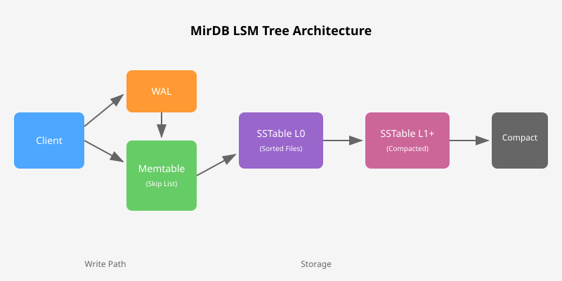

Memcached Protocol
Full compatibility with Memcached protocol. Use your existing clients and tools without any code changes.
A persistent key-value store with Memcached protocol compatibility
Full compatibility with Memcached protocol. Use your existing clients and tools without any code changes.
Unlike standard Memcached, MirDB persists your data to disk. Your data survives restarts and crashes.
Log-Structured Merge Tree with skip lists provides excellent write performance and efficient storage.
Written in Rust for memory safety without garbage collection. Fast, reliable, and secure.
Both minor and major compaction strategies keep your storage efficient and queries fast.
Write-Ahead Log ensures data durability. Every write is logged before acknowledgment.
MirDB uses a Log-Structured Merge Tree (LSM) architecture for efficient write-heavy workloads.

git clone https://github.com/nicksherron/mirdb.git
cd mirdb
cargo build --releaseMirDB uses the Memcached text protocol. Connect via telnet or any Memcached client:
# Store a key-value pair
# Syntax: set <key> <flags> <ttl> <bytes>\r\n<value>\r\n
set key 0 0 5\r\n
value\r\n
# Response: STORED# Retrieve a value by key
# Syntax: get <key>\r\n
get key\r\n
# Response:
# VALUE key 0 5
# value
# END# Get server statistics and level information
# MirDB-specific command
info\r\n
# Returns database status, SSTable levels, and performance metrics| Setting | Default Value | Description |
|---|---|---|
| Port | 12333 |
Server listening port |
| Work Directory | /tmp/mirdb |
Data storage directory |
| Memtable Size | 4 MB |
Maximum memtable size before flush |
| SSTable Size | 100 MB |
Maximum SSTable file size |
| Block Size | 4 KB |
SSTable block size |